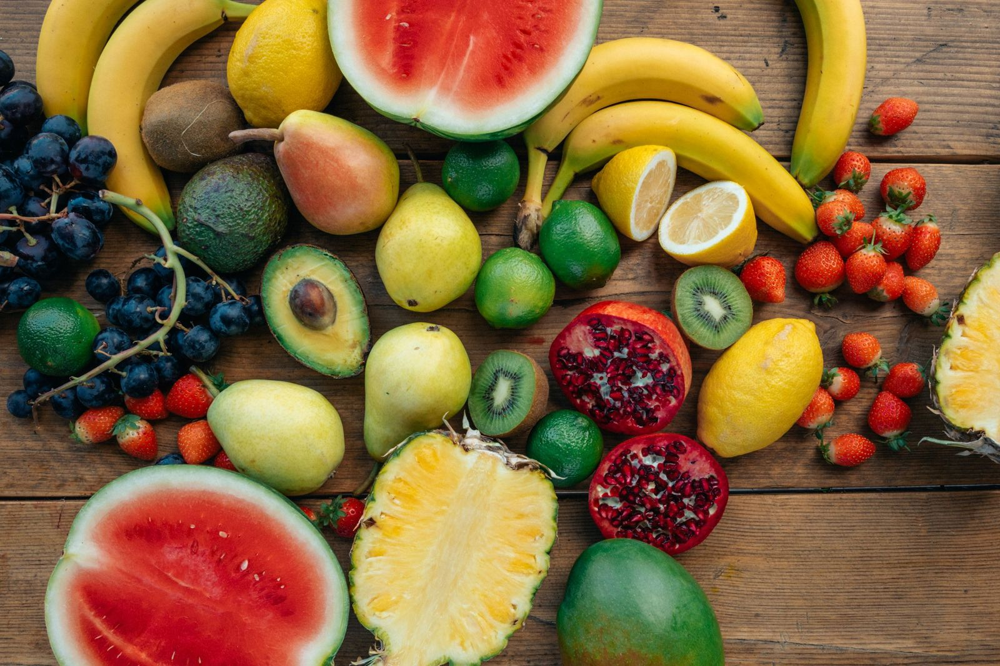
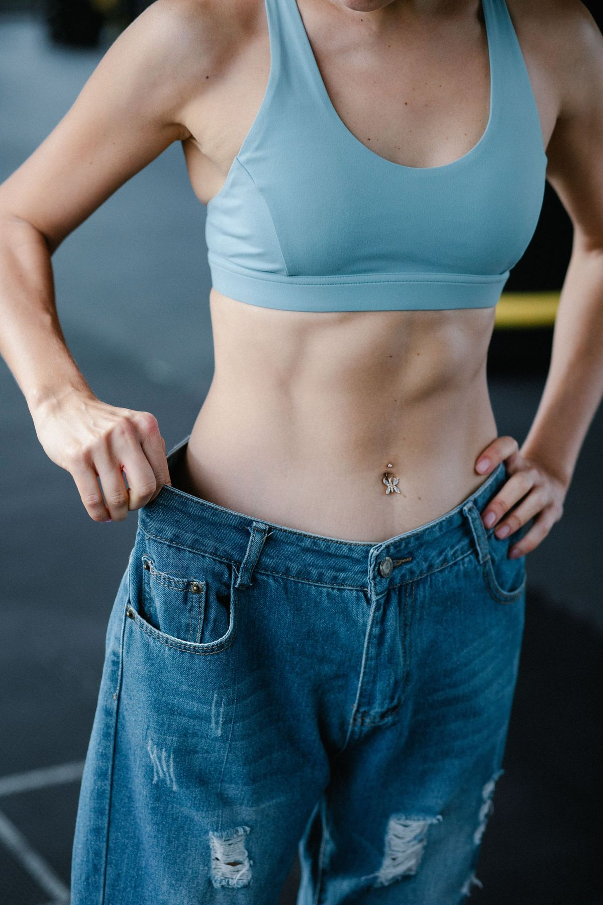

Het tegengif voor fitnessmythes
Van supplement-hypes tot crashdiëten: fit worden is al moeilijk genoeg zonder ruis. Hier lees je wat de wetenschap zegt, vertaald naar wat jij morgen kunt doen.
Nieuwe artikelen elke week, geschreven door je coach.

Hoeveel eiwit heb je écht nodig per dag?
1,6 tot 2,2 gram per kilo lichaamsgewicht, maar wat betekent dat op je bord? De wetenschap achter eiwitten, zonder verkooppraatjes.
Lees het artikel
Afvallen zonder jojo-effect
Waarom crashdiëten altijd terugslaan, en hoe je met een klein tekort, genoeg eiwit en krachttraining vet verliest en het eraf hóudt.
Lees het artikelSpieropbouw voor beginners
Progressieve overload, de juiste frequentie en realistische verwachtingen: wat écht werkt als je net begint met krachttraining.
Lees het artikel
De recovery-gids: warmte, kou & licht
Sauna, ijsbad, infrarood en roodlicht: wat ze doen, wat de wetenschap erover zegt en hoe je ze slim inzet naast je training.
Open de gidsHonger gekregen? Of liever een plan op maat?